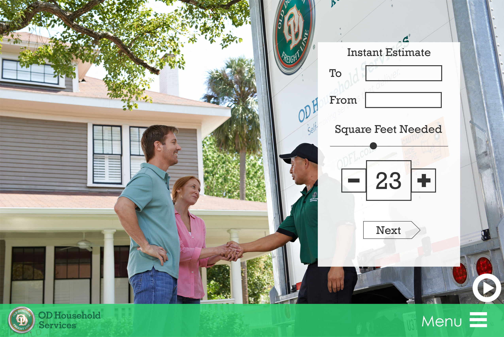
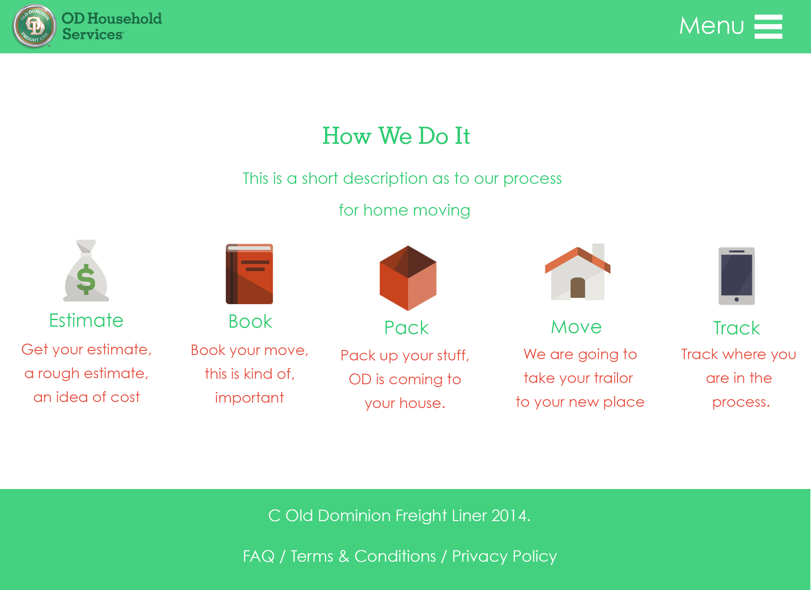
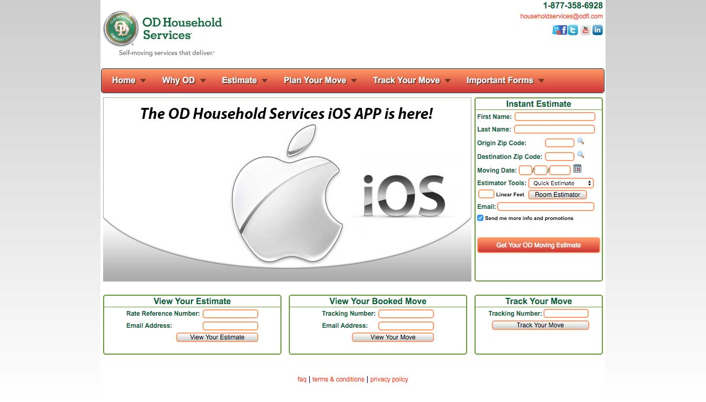

ODMove
Project Description
While working for Old Dominion Freight Line, they needed a website for customer facing applications for the service OD Move. I created the layout for OD Move and was able to simplify the process for getting a rate for your move. You can now get a rate in three steps instead of seven through the instant estimator.
Color Scheme

Mockups
 Previous
